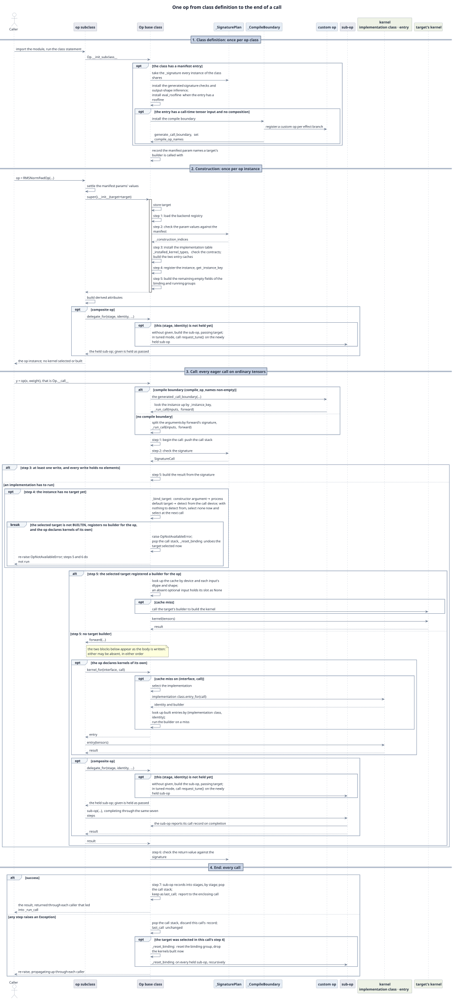

Op base class developer guide¶
This guide describes TileOPs' Op base class:
- what it does for every op;
- what an op subclass declares to it;
- the steps construction and a call go through inside the base class.
It is written for developers who change the Op base class and the code generated for it,
and for developers who need to know how the op layer works inside.
1. Scope of this guide¶
This guide covers the Op base class only. The topics below each have a guide of their own;
where this guide uses one of their conclusions it links to it rather than repeating it.
Table 1 Related guides
| No. | Topic | Guide |
|---|---|---|
| 1 | • The steps to add an op: the manifest entry, the op class's members, the arguments of kernel_for• Registration, tests and benchmarks |
Adding a new op |
| 2 | • Calling an op inside torch.compile• When a compile boundary is generated, and the cold-compile requirement • How the custom op and its fake are generated |
Bringing an op into torch.compile |
| 3 | • Selecting among kernel interfaces and implementations • Adding a kernel • How a backend joins |
How an op selects a kernel |
| 4 | • The format of a manifest entry • The checks generated from a signature |
Reading and writing the manifest |
2. Op and Kernel¶
An operator that runs kernels of its own is split into two classes:
- Op checks the inputs, selects the kernel and assembles the outputs.
- An op class with a manifest entry has the same name as the entry's key.
- An intermediate base class that concrete ops inherit from may have no entry.
- Kernel is the callable implementation object. It holds the TileLang program that runs on the device and its tile configuration; the program may be built only at the first launch.
A composite op may hold only sub-ops and declare no kernel of its own; see Composite ops.
An op instance is constructed once and called many times:
- Passed at construction:
- the parameters the manifest declares;
- the execution policy
target; - for a few ops, extra parameters their family defines, described below.
- Known only at each call: the shapes and dtypes of the tensors the call passes. The call
decides them, so they are not construction parameters.
- For an op with no tensor input, construction parameters give this information.
- A tensor the manifest declares among the parameters (a construction-time tensor) is
passed at construction, such as
LongRoPEFwdOp'srescale_factors; the construction check uses its shape and dtype.
- Kernels: built the first time a specialization is needed, then cached, so the same
specialization is reused afterwards. Whether an in-tree entry is reused is decided by the
identity the implementation's
entry_forreturns; a kernel a target builds is cached by the call's device and each input's dtype and shape. See Construction and calls § Kernel cache.
Extra construction parameters: the class attribute injected_parameters is the manifest
validator's allowlist.
- Of the constructor parameters the manifest does not declare, only those listed here are
allowed, besides the execution policy
target. - The family defines and uses these parameters; they are not an extension mechanism of the base class, which only lets their names through.
- Only MoE's
FusedMoEuses it today, listingprepare_finalizeandexperts.
3. The lifecycle of an op¶
This guide distinguishes three subjects:
- op class: a subclass of
Op, such asRMSNormFwdOp. - op instance: an object an op class constructs.
- a call: one call of an op instance.
- An op instance is callable:
Opdefines__call__. op(x, weight)callsOp.__call__, which enters the subclass'sforward.Opdoes not inherittorch.nn.Module.
- An op instance is callable:
An op passes through three stages in order:
Table 2 The three stages of an op
| No. | Stage | Subject | Trigger | How often |
|---|---|---|---|---|
| 1 | Class definition | op class | • Importing the op's module runs the class statement• Op.__init_subclass__ runs |
Once per op class |
| 2 | Construction | op instance | • op = RMSNormFwdOp(normalized_shape=(4096,))• The subclass's __init__ runs and calls Op.__init__ |
Once per op instance |
| 3 | Call | a call | • y = op(x, weight)• Op.__call__ runs |
Every call |
Figure 1 strings the key steps of the three stages together in time order, with the call stage split into running and ending.

Figure 1 One op, from class definition to the end of a call.
How to read Figure 1:
- Step numbers: "step n" of construction refers to Table 1 of Construction and calls § Construction; "step n" of the call and end stages refers to Table 3 of Construction and calls § The seven steps of a call.
- An
optbox runs only when its condition holds; analtbox runs one of its branches by condition. kernel_foris drawn only as far as "build the entry". How the implementation is selected is in How an op selects a kernel § How a call finds its kernel.- The figure shows only eager calls on ordinary tensors. An eager call on meta tensors of
an op with a compile boundary runs the signature check in the generated fake and does not
enter
_run_call. When traced, an op without a compile boundary skips the signature check, and an op with one runs the check in its fake, again without entering_run_call. Both are in Construction and calls § Call entry points.
Table 3 What the base class and the subclass do at each stage
| No. | Stage | The base class does | The subclass provides |
|---|---|---|---|
| 1 | Class definition | • Generates the signature check and output-shape inference from the manifest entry, and eval_roofline when the entry has a roofline• Generates custom ops, the compile boundary, when the entry has a call-time tensor input and no composition • Records the names of the manifest parameters, by which a target's builder is called |
• An op class with a manifest entry has the entry key's name; an intermediate base class may have no entry • Declares kernel_types, interfaces, delegate_types |
| 2 | Construction | Op.__init__ stores target, then in order:1. loads the backend registry 2. checks the parameter values against the manifest 3. installs the implementation table and checks the contracts 4. registers the instance 5. builds the instance state fields |
• Inheriting Op directly: assigns the manifest parameters to attributes of the same name, then calls super().__init__(target=target)• Through a family base class: passes arguments by the family base's signature, which ends by calling Op.__init__• Builds derived attributes and sub-ops after that |
| 3 | Call: before the body | 1. Checks the call against the manifest signature. 2. If every tensor the call writes holds no elements, runs no kernel and returns the result built from the signature. 3. If the instance has no target yet, selects one from the call's device. |
— |
| 4 | Call: running | • For an empty write, builds the result from the signature • Otherwise runs the target's kernel when there is a target builder, and the subclass's body when there is not • When the body calls kernel_for: looks up the cache, and on a miss selects the implementation and builds the entry• When the body calls delegate_for: builds or returns the held sub-op |
• forward• Calls kernel_for(interface, call) and delegate_for(stage, identity, ...) in it |
| 5 | Call: after the body returns | • Checks the return value • Files the sub-ops' calls under their stages • Keeps the call record last_call |
— |
| 6 | Call fails | • Discards this call's record; last_call is unchanged• When this call selected the target: undoes the target, drops the built kernels, and undoes the sub-ops' bindings level by level • When an earlier call selected the target: keeps the target, the kernels and the sub-ops |
— |
Notes on Table 3:
- The call rows describe eager calls. Traced inside
torch.compile, an op without a compile boundary skips the signature check; see Construction and calls § Call entry points. - Construction does not touch kernels. It selects and builds no kernel and reads no device property.
- Selecting an implementation and building a kernel happen at call time, once the
tensors' dtypes, shapes and device are known:
- when in-tree kernels run,
kernel_forselects the implementation and gets the entry; - when a target serves the op, the base class calls the target's builder to build the kernel and caches it.
- when in-tree kernels run,
- Why each step of
Op.__init__is at construction is in Construction and calls § Construction.
Two more duties belong to no single call:
- Roofline.
eval_roofline()evaluates the record of the last call.- A subclass whose FLOPs do not run on fp32 CUDA cores overrides
roof_key(). - See Call records and tuning § Roofline.
- Tuning and enumeration.
request_tune()is the only way into tuned mode: it puts the op and its sub-ops in tuned mode and sends a tuning request to the built kernelsiter_kernels()yields; in-tree entries built afterwards are tuned too; when the request cannot reach a target, it warns.iter_kernels()and related methods enumerate the built kernels.- See Call records and tuning.
Three rules for subclasses follow:
- Do not repeat checks. A subclass does not repeat checks the signature declares, and
does not check the device type.
- When the body runs, the signature check has passed.
- A kernel declares the devices it runs on.
- Do not build your own cache. A subclass keeps no kernel cache and does not decide
whether to build a kernel by whether some attribute is empty;
kernel_forowns the cache. - Hold sub-ops only through
delegate_for. When a sub-op that is not held completes a call, the parent call fails.
4. Members of the base class¶
The base class's members fall into three layers by who uses them:
- External interface: used by code that calls an op; see Table 4.
- Internal interface: declared or called by op subclasses; see Table 5.
- Implementation: a subclass neither calls nor overrides these; see the end of this section.
Table 4 External interface: used by code that calls an op
| No. | Member | Purpose | Details |
|---|---|---|---|
| 1 | Construction parameter target |
The execution policy, which every op takes | Construction and calls § Targets and the implementation table |
| 2 | __call__ |
• Calls the op: the caller writes op(...)• The subclass's forward decides the parameters; the caller never calls forward directly |
Construction and calls § Call entry points |
| 3 | serving_target |
The target this instance selected | Construction and calls § Targets and the implementation table |
| 4 | last_call, eval_roofline() |
The last completed call, and its (flops, bytes) |
Call records and tuning § last_call |
| 5 | request_tune(), kernel_config() |
Tuning, and reading the configuration in use | Call records and tuning § Tuning |
| 6 | iter_kernels(), built_entries(interface), held_delegates() |
Enumerate the built kernels, entries and sub-ops | Call records and tuning § Enumeration |
Table 5 Internal interface: declared or called by op subclasses
| No. | Member | Purpose | Details |
|---|---|---|---|
| 1 | Op.__init__(*, target=None) |
• Called as super().__init__(...) once the subclass has assigned its manifest parameters• Derived attributes and sub-ops are built after it |
Construction and calls § Construction |
| 2 | kernel_types, interfaces |
The subclass's kernel interfaces and implementations | Construction and calls § Kernel cache |
| 3 | injected_parameters |
• The manifest validator's allowlist: the parameter names a constructor may take beyond the manifest parameters and the execution policy • The family defines and uses the parameters; they are not an extension mechanism of the base class |
Construction and calls § Construction |
| 4 | dtype |
• Declared on the base class with default None• A subclass taking a dtype construction parameter overrides it |
Construction and calls § Construction |
| 5 | forward |
The computation, the one method every op writes; with a compile boundary, the base class runs it inside the custom op through the generated _call_boundary |
Construction and calls § Call entry points |
| 6 | kernel_for(interface, call), key_for(interface, call) |
• kernel_for gets the entry that serves this call• key_for returns only the selected implementation's key and builds no entry; tests use it to check the selection |
Construction and calls § Kernel cache |
| 7 | delegate_types, delegate_for(stage, identity, ...) |
Declare and hold sub-ops | Composite ops |
| 8 | roof_key(), eval_roofline_read_bytes(), roofline_data_terms() |
The parts of the roofline a subclass may override | Call records and tuning § Roofline |
Implementation:
- Includes
_run_call,_reset_binding, the call stack,_SignaturePlan, which generates the signature checks, and_CompileBoundary, which generates the compile boundary. - These members start with an underscore; a subclass neither calls nor overrides them.
- See Construction and calls and Class structure and instance state.
Members generated from the manifest entry, which a subclass does not write: the signature
check, _infer_output_shapes, eval_roofline (when the entry has a roofline),
_call_boundary (with a compile boundary), and the compile boundary's custom ops.
5. Pages of this guide¶
Table 6 Pages
| No. | Page | Contents |
|---|---|---|
| 1 | Construction and calls | • Op.__init__• Call entry points, the seven steps of a call • Targets and the implementation table • Kernel cache • Failure and undo |
| 2 | Composite ops | • Declaring and holding sub-ops • How sub-op calls are filed under the parent call |
| 3 | Call records and tuning | • last_call• Roofline • Enumeration • Tuning |
| 4 | Class structure and instance state | • Class diagram • Structure of the generated code • Grouping of instance state • What the base class guarantees when something is added |